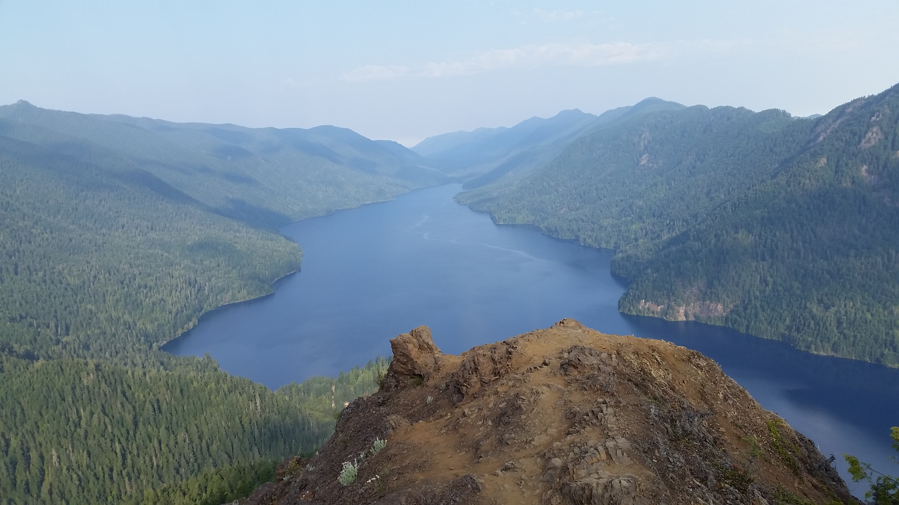
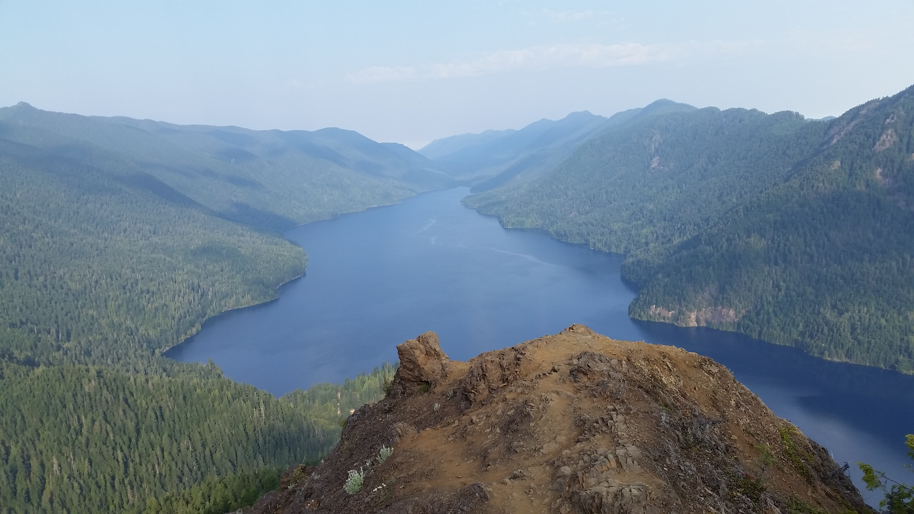

Ludwin De Leon is a junior software developer learning HTML, CSS and Javascript. Ludwin has been interested in coding since high school, when he was introduced to Pascal. Ludwin aspires to work as a software developer in Python. When he is not learning a new language or doing math for fun, he is hiking a mountain or baking some delicious bread.
Ludwin is very passionate about nature and exploring the outdoors. Hiking the beautiful mountains in the cascades is a great way to excersice but also is a time to reflect and clear the mind. Here are a few of his favorite pictures:

 

Here are some interesting facts about Ludwin.
- Ludwin is from Guatemala, where he lived until he was 27 when he decided to move to Seattle.
- He also loves cooking. He learned how to cook in Guatemala where his parents owned a restaurant.
- He enjoys baking, especially bread.
- Ludwin also enjoys gardening, particularly bonsai trees.
Goals that Ludwin has for the future:
- Graduate from code 201.
- Get a fun job where he can be creative and develop great ideas.
- Travel to Guatemala to visit his family and hike some the volcanoes that suround the city where he was born.
- Buy a house with a great yard so he can garden and grow more bonsai trees.